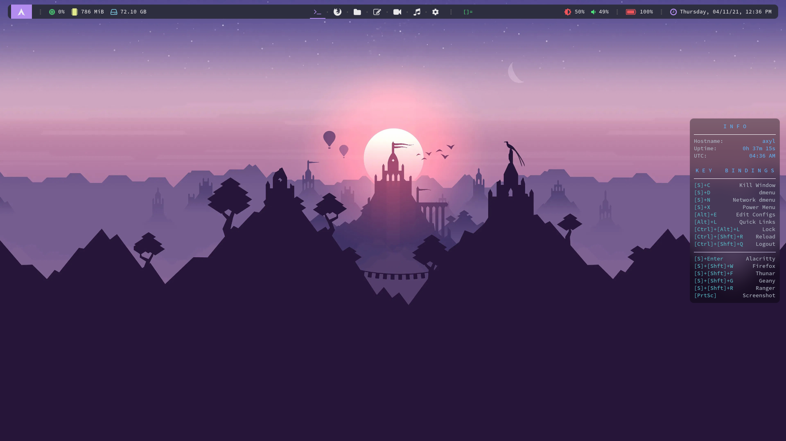
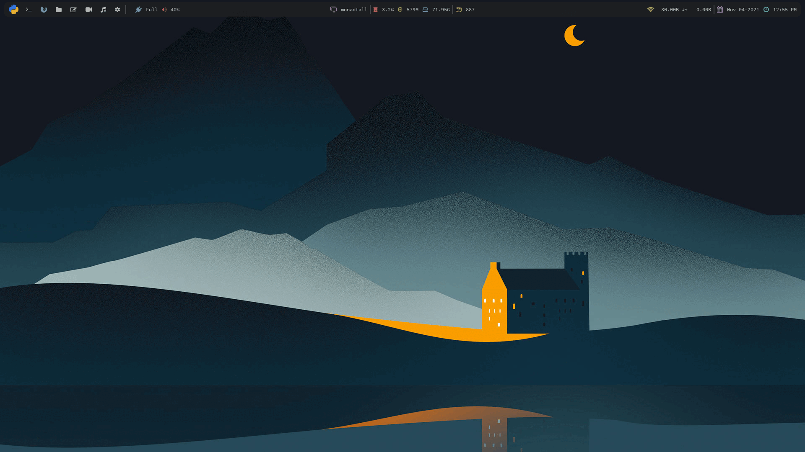

Power in Simplicity
Axyl is a window manager-centric operating system. Turbocharge your productivity with i3, bspwm and dwm and more.

What is Axyl?
Features
Arch-Based
Built on top of Arch Linux, this distro gives you the latest
cutting-edge software right away.
Minimal Base
Axyl follows the KISS principles, keeping the base system simple yet flexible.
Window Manager-Centric
Axyl focuses completely on tiling WMs, so we can provide you
with the best workflow for power users.
Turbocharge your destiny
Qtile Desktop
Window Managers
In Axyl, all window managers come with the same set of global
keybindings, so switching is easy. Install just one,
or install as many as you want.

i3
A simple and classic window manager, inspiring countless
of other window managers.

bspwm
A tiling window manager that represents a full binary tree.

dwm
The dynamic window manager by suckless.
Axyl uses chadwm
from siduck, the creator of NvChad.
Qtile
Hackable tiling window manager written in Python.